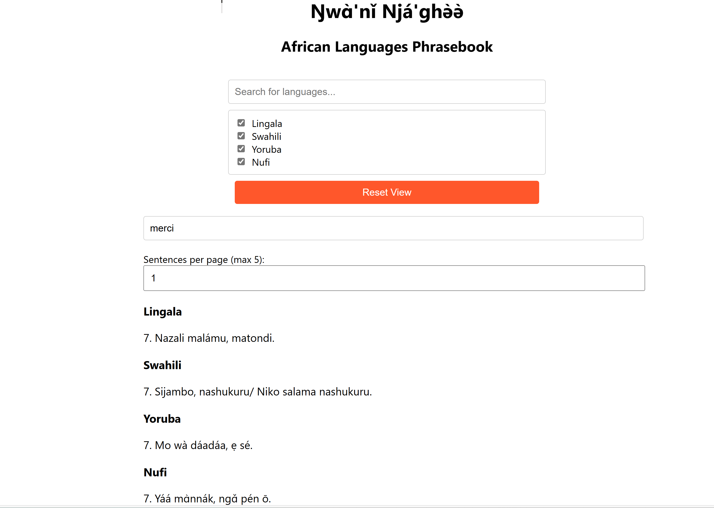

About the Project
Welcome to The African Polyglot project page! My name is Shck Tchamna, and I am excited to present this innovative platform designed to preserve and promote African languages through technology and innovation.
The Vision
Languages are more than just tools for communication—they are the heart of culture and identity. This project aims to preserve and revitalize African languages by creating a digital platform where users can explore, learn, and use native phrases from multiple African dialects.
Features
- Interactive phrase search for multiple languages, including Nufi, Yoruba, Swahili, Lingala, and many more.
- Audio playback for native phrases to help users learn accurate pronunciation.
- Responsive and intuitive user interface optimized for desktop and mobile devices.
- Customizable user experience with language filtering, pagination, and personalized search options.
- Keyboard navigation for seamless accessibility, including arrow-key pagination support.
- Real-time updates to ensure users have access to the latest language content without page reloads.
Technologies
- Front-End: Built with React.js for dynamic rendering and optimized performance.
- Back-End: Developed using Node.js and Express, with PostgreSQL for database management.
- Cloud Services: Integrated Google Cloud Storage for hosting audio files, ensuring secure and scalable access.
- Hosting: The API backend is hosted on Render, while the front-end application is deployed on Firebase Hosting for fast and reliable delivery.
- DevOps: Configured GitHub Actions for CI/CD to automate builds and deployments, ensuring efficient development workflows.
- Real-Time Updates: Leveraged Supabase for seamless synchronization and dynamic database management.
Challenges and Solutions
While building this project, I encountered several challenges:
- Audio Hosting: Managing large audio files was difficult within Firebase Hosting's limits. Transitioning to Google Cloud Storage provided a scalable and cost-effective solution.
- CORS Policies: Implementing proper CORS configurations allowed smooth communication between the back-end API and front-end application.
- Database Optimization: Writing efficient SQL queries ensured fast data retrieval and a smooth user experience.
Impact
This project has the potential to reach millions of users, including those reconnecting with their roots or interested in learning African languages. It contributes to preserving endangered languages, fostering cultural exchange, and making language learning accessible to everyone.
My Role
I managed all aspects of this project:
- Developed a responsive front-end application using React.js.
- Designed and implemented the back-end API using Node.js, Express, and PostgreSQL.
- Deployed the back-end API on Render and the front-end application on Firebase Hosting.
- Integrated audio file management using Google Cloud Storage for scalability and security.
- Configured CI/CD pipelines with GitHub Actions to automate builds and deployments.
- Ensured the application adheres to accessibility standards with keyboard navigation and responsive design.
Future Enhancements
My vision for this platform includes:
- Expanding language offerings to include more African dialects.
- Introducing gamified learning features to make language acquisition more engaging.
- Integrating machine learning for real-time translations and personalized learning recommendations.
Contact Me
If you’re interested in learning more about this project or exploring collaboration opportunities, feel free to reach out to me at tchamna@gmail.com.